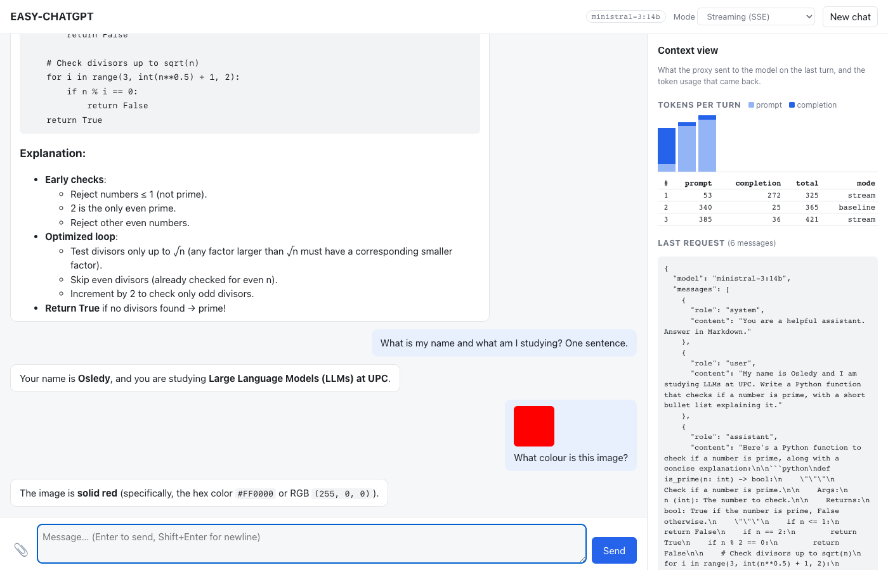

Student: Osledy Bazó
Partner: none (solo)
Repository: https://github.com/osledybazo/upc-llm-course (code in week1/exercise5/)

A three-turn conversation with ministral-3:14b (local Ollama), served by docker compose up on http://localhost:6661:
The context view on the right shows the exact JSON the FastAPI proxy sent to the model, including the system prompt and every previous turn. It also shows the token usage that came back. Prompt tokens climb every turn (53 → 340 → 385) because each request carries the whole conversation.
There are two models involved, doing different jobs:
ministral-3:14b on local Ollama. This is the model EASY-CHATGPT talks to. It's free, runs offline on my M1 Pro, and can read images, so it covers the vision version. Switching to a cloud model only means editing the three LLM_* lines in .env.The first version had no favicon and no chart legend. During the end-to-end browser test, the console reported a 404 Not Found. The browser was asking for /favicon.ico and the server didn't have one. The token bar chart also used two colours without saying which was prompt and which was completion. Both were fixed: an inline favicon in index.html and a colour legend next to "Tokens per turn". The re-test showed no console errors.
Something I noticed while using it. I asked it to compare FastAPI, Flask and Django in a table. The first table appeared as raw | … | text in a grey box instead of a formatted table. The renderer wasn't broken: the model had wrapped its table inside a ``` code fence, so the page correctly showed it as code. The second table in the same answer rendered fine. The app shows exactly what the model sends, so if the output looks wrong, check the model's raw output (visible in the context view) before blaming the code.
I'd want it to stop being just a chat box and act: call tools (search, run code, read files) and decide by itself which to use. That would turn the proxy into an agent.